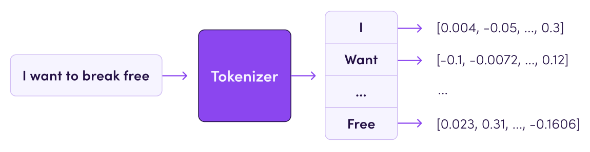

大模型中的Tokenization
Tokenization是大模型中非常关键的部分，目标是将文本转换为模型可以处理的数据，将文本转换为token，形成词表，再将token转换为模型的输入向量。其形式入下图所示：

不同类型的Tokenizer
- Word-based Tokenizer：基于词的切分，将一段文本以词为单位进行切分，比如：“I want to break free”，按照该方式切分后成为：[“I”, “want”, “to”, “break”, “free”]。该方法最中会得到一个非常大的词表，大的词表在对文本进行后续的向量表示时(embedding)会得到一个大的
embedding matrix，这就增加了模型的复杂度。其次，有些类似的词会作为不同的词，如dog与dogs。最后可能出现较多unknown的词。 - Character-based Tokenizer：基于字符的切分，比如“I want to break free”，可以拆分为[‘I’, ‘w’, ‘a’, ’t’, …, ‘y’]。该方法拆分后词表很小，而且出现unknown的情况很少。但是，每个字符的语义很弱，每个字符本事就没有什么意义，词的语义更为丰富。此外，对于不同的语言，字符有所不同。
- Subword-based Tokenizer：基于子词的切分，是基于词和基于字符的折中。遵循的原则：不应将常用词拆分为更小的子词 ，而应将低频词分解为有意义的子词。这使得我们能够使用较小的词表进行相对较好的覆盖，并且几乎没有unknown的情况。例如：’tokenizer’通过子词的划分后，转换为[‘token’, ‘izer’]。
Subword-based Tokenizer是大模型常用的Tokenization类型，有常见的三种方法：Byte-Pair Encoding(BPE)，WordPiece，Unigram。下表是子词分词方法在场景模型中的应用
| 分词方法 | 典型模型 |
|---|---|
| BPE | GPT, GPT-2, GPT-J, GPT-Neo, RoBERTa, BART, LLaMA, ChatGLM-6B, Baichuan |
| WordPiece | BERT, DistilBERT，MobileBERT |
| Unigram | AlBERT, T5, mBART, XLNet |
Byte-Pair Encoding(BPE)
BPE是最广泛采用的subword分词算法，通过迭代的方法合并最常见的字符对来学习词汇表。具体的大致原理如下：
从字符级别开始构建词汇表。
在语料库中查找最常见的字符对并合并，添加到词汇表中。
重复该过程直到达到预定义的词汇大小或无法合并为止。
Byte-level BPE(BBPE)
用byte来构建最基础的词表而不是字符。首先将文本按照UTF-8进行编码，每个字符在UTF-8的表示中占据1-4个byte。 在byte序列上再使用BPE算法，进行byte level的相邻合并。
这种方式可以解决跨语言和不常见字符的问题，相比BPE更加节省词表空间。
WordPiece
WordPiece分词与BPE非常类似，只是在训练阶段合并pair的策略不是pair的频率而是互信息。
Unigram
Unigram分词与BPE和WordPiece不同，是基于一个大词表逐步裁剪成一个小词表。 通过Unigram语言模型计算删除不同subword造成的损失来衡量subword的重要性，保留重要性较高的子词。
在每一步，Unigram都定义个训练集合的loss（如log-likelihood），然后它计算去除一个符号（字典中的一个token）之后整体loss的下降，最终把10%或者20%的那些loss下降最多的符号从词典中去除。直到词典大小符合预期。